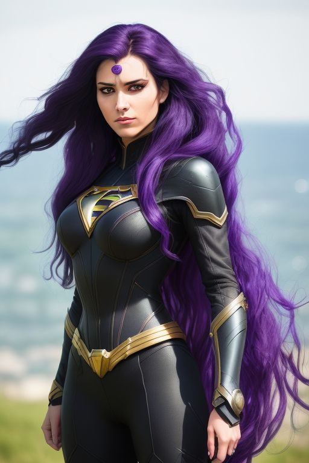

A csapat szuperhősei
Antto Niemi

Lyra Callis
Képesség: Aetheria képes az éteri energiákat manipulálni, így lebegni, fényes, plazmaszerű pengéket formálni, vagy akár gyógyítani másokat. Az energiája azonban nem végtelen, és ha túlságosan kimeríti magát, napokig elveszítheti az erejét.